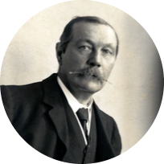

Sherlock Holmes
First appearance A Study in Scarlet (1887)
Last appearance "The Adventure of Shoscombe Old Place"
(1927, canon)
Created by Sir Arthur Conan Doyle
In-universe information
Occupation Consulting private detective
Family Mycroft Holmes (brother)
Nationality British
From Wikipedia, the free encyclopedia
Sherlock Holmes is a fictional detective created by British author Sir Arthur Conan Doyle. Referring to himself as a "consulting detective" in the stories,
Holmes is known for his proficiency with observation, deduction, forensic science, and logical reasoning that borders on the fantastic,
which he employs when investigating cases for a wide variety of clients, including Scotland Yard.
- Inspiration for the character
- Fictional character biography
- Family and early life
- Life with Watson
- Practice
- The Great Hiatus
- Retirement
- Personality and habits
- Knowledge and skills
- Reception
Inspiration for the character

|
Edgar Allan Poe's C. Auguste Dupin is generally acknowledged as the first detective in fiction and served as the prototype for many later characters, including Holmes.
Conan Doyle once wrote, "Each [of Poe's detective stories] is a root from which a whole literature has developed... Where was the detective story until
Poe breathed the breath of life into it?" Similarly, the stories of Émile Gaboriau's Monsieur Lecoq were extremely popular at the time Conan Doyle began writing Holmes, and Holmes's speech and behaviour sometimes follow that of Lecoq.
|
Fictional character biography
Family and early life
Details of Sherlock Holmes's life in Conan Doyle's stories are scarce and often vague. Nevertheless, mentions of his early life and extended family paint a loose biographical picture of the detective.
Life with Watson
Financial difficulties lead Holmes and Dr. Watson to share rooms together at 221B Baker Street, London.Their residence is
maintained by their landlady, Mrs. Hudson.[26] Holmes works as a detective for twenty-three years, with Watson assisting him for seventeen of those years.
Sherlock Holmes Books
| Name |
Publishing Year |
Ratings |
| A Study in Scarlet |
1887 |
❤❤❤❤❤ |
| The Adventures of Sherlock Holmes |
1892 |
❤❤❤❤❤ |
| The Sign of Four |
1890 |
❤❤❤❤ |
| The Casebook of Sherlock Holmes |
1927 |
❤❤❤❤❤ |
| The Valley of Fear |
1915 |
❤❤❤❤❤ |
| The Memoirs of Sherlock Holmes |
1894 |
❤❤❤❤❤ |
About the Author
|  |
Sir Arthur Ignatius Conan Doyle (22 May 1859 – 7 July 1930) was a British writer and physician. He created the character Sherlock Holmes in 1887 for A Study in Scarlet, the first of four novels and fifty-six short stories
about Holmes and Dr. Watson. The Sherlock Holmes stories are milestones in the field of crime fiction.
|
Contact the Author